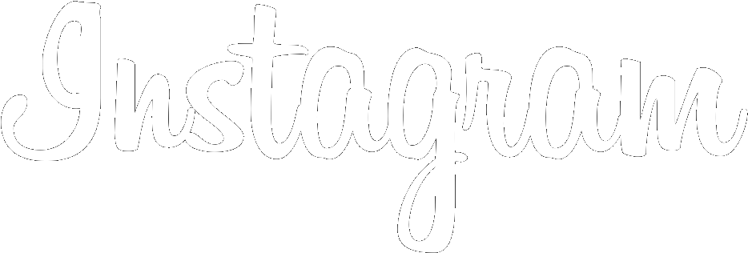
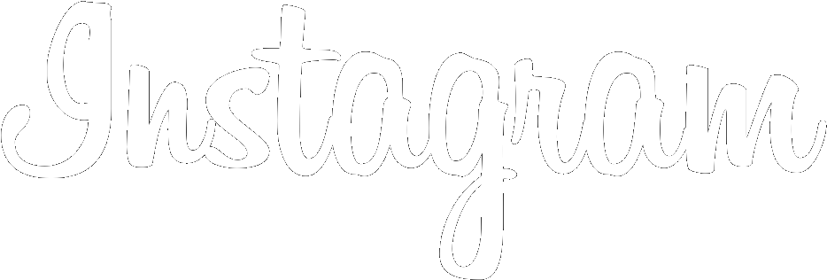

We are rocket scientist working on the hardest problem in the world - making humans more human with the use of AI. We are not building for today. We are building for 5 years in the future.
At Wayd Labs Inc. you'll be surrounded by world-class talent and the most ambitious individuals you'll ever meet. This is the place for you to do your life's work and be remembered for years to come.
We are backed & received offers by the legendary investors who have funded companies like:
 


